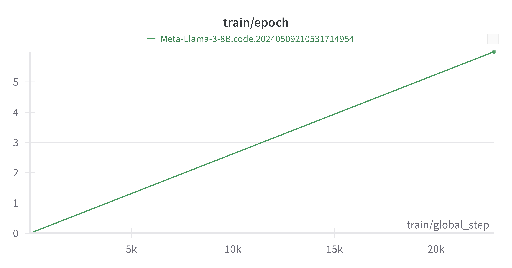
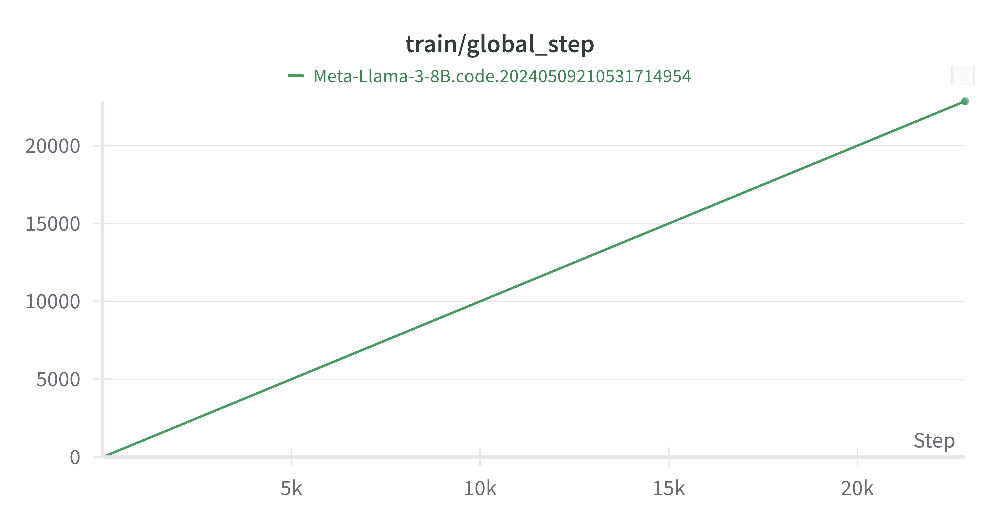
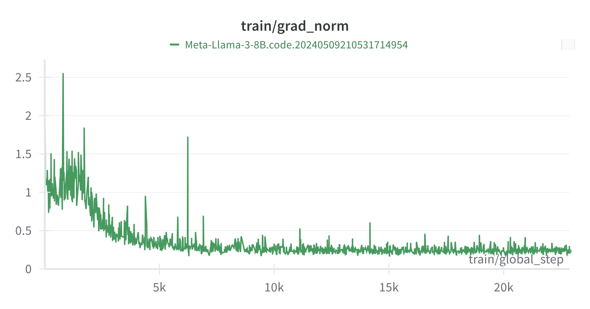
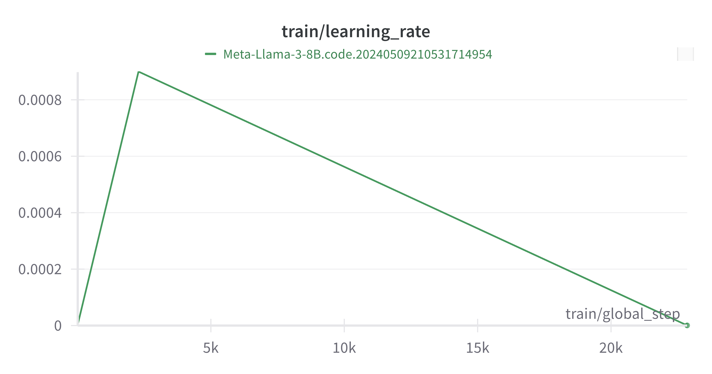
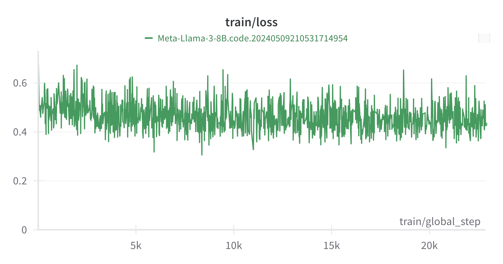
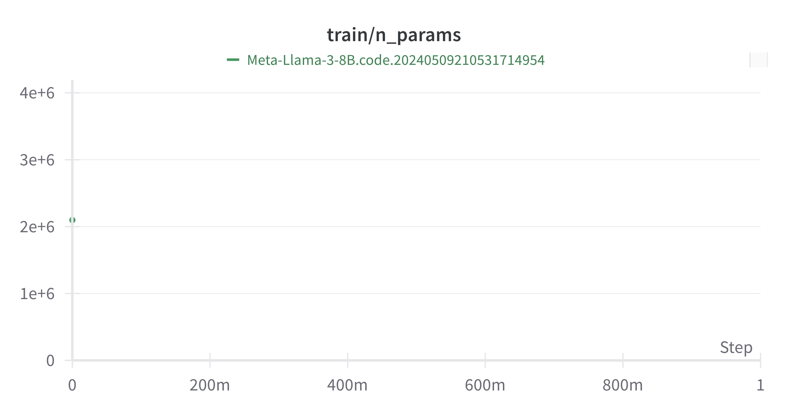
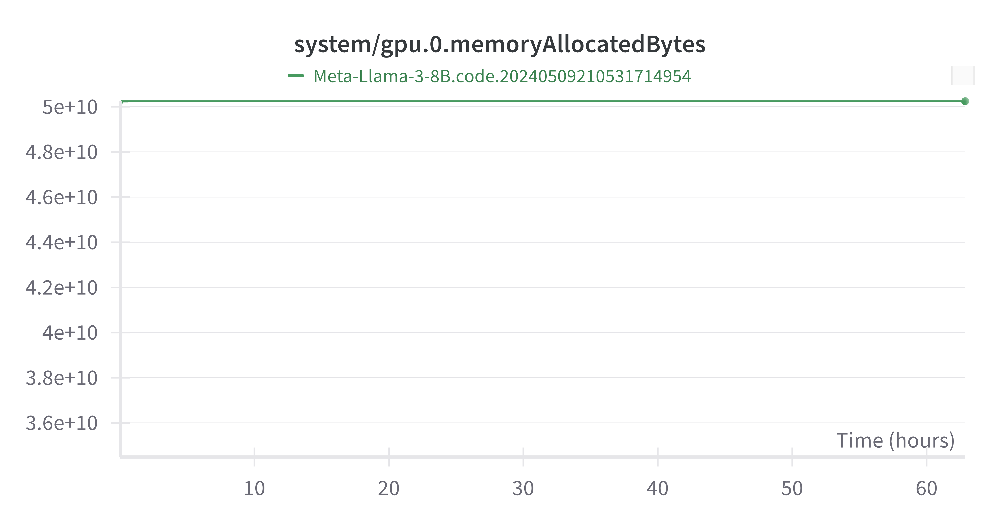

自从 llama3-8b-base 的 commonsense 微调跑通之后，对于 base 和 instruct 的模型的 commonsense 或 math 微调就只是时间问题。因此将目标放在利用 ReFT 实现 llama3-8b 在 code 任务上的微调。
Prepare
具体可以参考之前的博客 LoReFT-Llama3-8B-Base-Commonsense-170k 的相关配置。
Dataset
由于缺乏对应的 train&eval 数据集，因此需要自己去找开源的数据集。
Train Dataset
在训练数据集方面，选择 hugging face 上的 code_instructions_122k_alpaca_style 数据集，该数据集采用经典的 alpaca 格式进行 prompt。首先将其下载到本地并改名：
# 默认已经进入 LoReFT 虚拟环境，并进入到 /root/auto-tmp/pyreft/examples/loreft 中
# 创建文件夹
cd dataset && mkdir code_122k && cd code_122k
# 下载数据集（用 hf-mirror.com 更快）
# 注：下载链接：将鼠标放在数据集上，右键复制链接。
wget https://hf-mirror.com/datasets/TokenBender/code_instructions_122k_alpaca_style/resolve/main/code_instructions_120k.json?download=true
--2024-05-07 16:25:03-- https://cdn-lfs.hf-mirror.com/repos/ab/1d/***&response-content-type=***&Expires=***&Policy=***&Signature=***&Key-Pair-Id=***
Resolving cdn-lfs.hf-mirror.com (cdn-lfs.hf-mirror.com)... *.*.*.*, *.*.*.*, *.*.*.*, ...
Connecting to cdn-lfs.hf-mirror.com (cdn-lfs.hf-mirror.com)|*.*.*.*|:443... connected.
HTTP request sent, awaiting response... 200 OK
Length: 169499006 (162M) [application/json]
Saving to: ‘code_instructions_120k.json?download=true’
code_instruction 100%[========>] 161.65M 16.9MB/s in 9.7s
# 改名（右键也可以）
mv code_instructions_120k.json\?download\=true train.json
# 检查
ls
train.json
接下来输出其中一个训练样本，观察其特征：
# 在 /root/auto-tmp/pyreft/examples/loreft/dataset/code_122k 下
>>> from datasets import load_dataset
>>> dataset = load_dataset("json", data_files="train.json", split="train")
Generating train split: 121959 examples [00:01, 96800.40 examples/Generating train split: 121959 examples [00:01, 92617.72 examples/s]
>>> dataset[0]
{'output': '# Python code\ndef sum_sequence(sequence):\n sum = 0\n for num in sequence:\n sum += num\n return sum', 'input': '[1, 2, 3, 4, 5]', 'instruction': 'Create a function to calculate the sum of a sequence of integers.', 'text': 'Below is an instruction that describes a task. Write a response that appropriately completes the request. ### Instruction: Create a function to calculate the sum of a sequence of integers. ### Input: [1, 2, 3, 4, 5] ### Output: # Python code\ndef sum_sequence(sequence):\n sum = 0\n for num in sequence:\n sum += num\n return sum'}
可以看到，其样本按照以下表格形式分布：
| instruction |
input |
output |
text |
| Create a function to calculate the sum of a sequence of integers. |
[1, 2, 3, 4, 5] |
# Python code\ndef sum_sequence(sequence):\n sum = 0\n for num in sequence:\n sum += num\n return sum |
Below is an instruction that describes a task. Write a response that appropriately completes the request. ### Instruction: Create a function to calculate the sum of a sequence of integers. ### Input: [1, 2, 3, 4, 5] ### Output: # Python code\ndef sum_sequence(sequence):\n sum = 0\n for num in sequence:\n sum += num\n return sum |
在 /loreft/templates.py 内找到对应的模版 alpaca_prompt_template，同时注意到某些 inpur 是空的，因此需要相应的 alpaca_prompt_no_input_template，如下所示：
alpaca_prompt_template = """Below is an instruction that \
describes a task, paired with an input that provides \
further context. Write a response that appropriately \
completes the request.
### Instruction:
%s
### Input:
%s
### Response:
"""
alpaca_prompt_no_input_template = """Below is an instruction that \
describes a task. Write a response that appropriately \
completes the request.
### Instruction:
%s
### Response:
"""
Eval Dataset
在验证数据集上，采用 Human-Eval 和MBPP共同作为评分的指标。
采用 bigcode-evaluation-harness 来进行各个指标的评估。
Human-Eval
首先是 Human-Eval 数据集，将其 git 到 /root/auto-tmp/ 路径下，并安装相关包：
# 同样在虚拟环境下
cd /root/auto-tmp
# git
git clone https://github.com/openai/human-eval
# installation
/root/miniconda3/envs/LoReFT/bin/pip install -e human-eval
Looking in indexes: http://mirrors.aliyun.com/pypi/simple
Obtaining file:///root/autodl-tmp/human-eval
Preparing metadata (setup.py) ... done
Requirement already satisfied: tqdm in /root/miniconda3/envs/LoReFT/lib/python3.9/site-packages (from human-eval==1.0) (4.66.4)
Requirement already satisfied: fire in /root/miniconda3/envs/LoReFT/lib/python3.9/site-packages (from human-eval==1.0) (0.6.0)
Requirement already satisfied: numpy in /root/miniconda3/envs/LoReFT/lib/python3.9/site-packages (from human-eval==1.0) (1.26.4)
Requirement already satisfied: six in /root/miniconda3/envs/LoReFT/lib/python3.9/site-packages (from fire->human-eval==1.0) (1.16.0)
Requirement already satisfied: termcolor in /root/miniconda3/envs/LoReFT/lib/python3.9/site-packages (from fire->human-eval==1.0) (2.4.0)
Installing collected packages: human-eval
Running setup.py develop for human-eval
Successfully installed human-eval-1.0
可以看到其采取的评估样本的示例（在 human-eval/data/HumanEval.jsonl.gz 中）：
{"task_id": "HumanEval/0", "prompt": "from typing import List\n\n\ndef has_close_elements(numbers: List[float], threshold: float)-> bool:\n \"\"\" Check if in given list of numbers, are any two numbers closer to each other than\n given threshold.\n >>> has_close_elements([1.0, 2.0, 3.0], 0.5)\n False\n >>> has_close_elements([1.0, 2.8, 3.0, 4.0, 5.0, 2.0], 0.3)\n True\n \"\"\"\n", "entry_point": "has_close_elements", "canonical_solution": "for idx, elem in enumerate(numbers):\n for idx2, elem2 in enumerate(numbers):\n if idx != idx2:\n distance = abs(elem - elem2)\n if distance < threshold:\n return True\n\n return False\n", "test": "\n\nMETADATA = {\n'author':'jt',\n'dataset':'test'\n}\n\n\ndef check(candidate):\n assert candidate([1.0, 2.0, 3.9, 4.0, 5.0, 2.2], 0.3)== True\n assert candidate([1.0, 2.0, 3.9, 4.0, 5.0, 2.2], 0.05)== False\n assert candidate([1.0, 2.0, 5.9, 4.0, 5.0], 0.95)== True\n assert candidate([1.0, 2.0, 5.9, 4.0, 5.0], 0.8)== False\n assert candidate([1.0, 2.0, 3.0, 4.0, 5.0, 2.0], 0.1)== True\n assert candidate([1.1, 2.2, 3.1, 4.1, 5.1], 1.0)== True\n assert candidate([1.1, 2.2, 3.1, 4.1, 5.1], 0.5)== False\n\n"}
通过了解得知，human-eval 一共只有 164 条测试用例，每个测试用例由以下部分组成：
├── example
│ ├── task_id：任务 id
│ ├── prompt： 题目
│ ├── entry_point：唯一标记
│ ├── canonical_solution：参考答案
│ ├── test：测试用例
若想对生成模型进行评估，则只需要两步：
- 定义
generate_one_completion 函数，其作用是调用当前微调后的大模型对测试用例中的每个样本的 prompt 进行代码生成。
from human_eval.data import write_jsonl, read_problems
problems = read_problems()
num_samples_per_task = 200
samples = [dict(task_id=task_id, completion=generate_one_completion(problems[task_id]["prompt"]))
for task_id in problems
for _ in range(num_samples_per_task)
]
write_jsonl("samples.jsonl", samples)
- 调用
evaluate_functional_correctness 对上一步生成的 "samples.jsonl" 进行评估：
evaluate_functional_correctness samples.jsonl
bigcode-evaluation-harness
这是一个开源的 github 库，用于评估代码生成模型的框架。一共有 7 个代码生成任务。
# 同样在虚拟环境下
cd /root/auto-tmp
# git
git clone https://github.com/bigcode-project/bigcode-evaluation-harness.git
# installation
/root/miniconda3/envs/LoReFT/bin/pip install -e bigcode-evaluation-harness
然而却报错：
Looking in indexes: http://mirrors.aliyun.com/pypi/simple
Obtaining file:///root/autodl-tmp/bigcode-evaluation-harness
Preparing metadata (setup.py) ... done
Requirement already satisfied: transformers>=4.25.1 in /root/miniconda3/envs/LoReFT/lib/python3.9/site-packages (from bigcode-eval==0.0.0) (4.40.1)
Requirement already satisfied: accelerate>=0.13.2 in /root/miniconda3/envs/LoReFT/lib/python3.9/site-packages (from bigcode-eval==0.0.0) (0.29.3)
Requirement already satisfied: datasets>=2.6.1 in /root/miniconda3/envs/LoReFT/lib/python3.9/site-packages (from bigcode-eval==0.0.0) (2.18.0)
Requirement already satisfied: evaluate>=0.3.0 in /root/miniconda3/envs/LoReFT/lib/python3.9/site-packages (from bigcode-eval==0.0.0) (0.4.2)
Collecting pyext==0.7 (from bigcode-eval==0.0.0)
Downloading http://mirrors.aliyun.com/pypi/packages/b0/be/9b6005ac644aaef022527ce49617263379e49dbdbd433d1d3dd66d71f570/pyext-0.7.tar.gz (7.8 kB)
Preparing metadata (setup.py) ... done
Collecting mosestokenizer==1.0.0 (from bigcode-eval==0.0.0)
Downloading http://mirrors.aliyun.com/pypi/packages/45/c6/913c968e5cbcaff6cdd2a54a1008330c01a573ecadcdf9f526058e3d33a0/mosestokenizer-1.0.0-py3-none-any.whl (51 kB)
━━━━━━━━━━━━━━━━━━━━━━━━━━━━━━━━━━━━━━━━ 51.2/51.2 kB 2.5 MB/s eta 0:00:00
Requirement already satisfied: huggingface_hub>=0.11.1 in /root/miniconda3/envs/LoReFT/lib/python3.9/site-packages (from bigcode-eval==0.0.0) (0.20.3)
Collecting fsspec<2023.10.0 (from bigcode-eval==0.0.0)
Downloading http://mirrors.aliyun.com/pypi/packages/fe/d3/e1aa96437d944fbb9cc95d0316e25583886e9cd9e6adc07baad943524eda/fsspec-2023.9.2-py3-none-any.whl (173 kB)
━━━━━━━━━━━━━━━━━━━━━━━━━━━━━━━━━━━━━━━━ 173.4/173.4 kB 7.0 MB/s eta 0:00:00
Collecting docopt (from mosestokenizer==1.0.0->bigcode-eval==0.0.0)
Downloading http://mirrors.aliyun.com/pypi/packages/a2/55/8f8cab2afd404cf578136ef2cc5dfb50baa1761b68c9da1fb1e4eed343c9/docopt-0.6.2.tar.gz (25 kB)
Preparing metadata (setup.py) ... done
Collecting openfile (from mosestokenizer==1.0.0->bigcode-eval==0.0.0)
Downloading http://mirrors.aliyun.com/pypi/packages/93/e6/805db6867faacb488b44ba8e0829ef4de151dd0499f3c5da5f4ad11698a7/openfile-0.0.7-py3-none-any.whl (2.4 kB)
Collecting toolwrapper (from mosestokenizer==1.0.0->bigcode-eval==0.0.0)
Downloading http://mirrors.aliyun.com/pypi/packages/41/7b/34bf8fb69426d8a18bcc61081e9d126f4fcd41c3c832072bef39af1602cd/toolwrapper-2.1.0.tar.gz (3.2 kB)
Preparing metadata (setup.py) ... done
Requirement already satisfied: numpy>=1.17 in /root/miniconda3/envs/LoReFT/lib/python3.9/site-packages (from accelerate>=0.13.2->bigcode-eval==0.0.0) (1.26.4)
Requirement already satisfied: packaging>=20.0 in /root/miniconda3/envs/LoReFT/lib/python3.9/site-packages (from accelerate>=0.13.2->bigcode-eval==0.0.0) (24.0)
Requirement already satisfied: psutil in /root/miniconda3/envs/LoReFT/lib/python3.9/site-packages (from accelerate>=0.13.2->bigcode-eval==0.0.0) (5.9.8)
Requirement already satisfied: pyyaml in /root/miniconda3/envs/LoReFT/lib/python3.9/site-packages (from accelerate>=0.13.2->bigcode-eval==0.0.0) (6.0.1)
Requirement already satisfied: torch>=1.10.0 in /root/miniconda3/envs/LoReFT/lib/python3.9/site-packages (from accelerate>=0.13.2->bigcode-eval==0.0.0) (2.1.0+cu118)
Requirement already satisfied: safetensors>=0.3.1 in /root/miniconda3/envs/LoReFT/lib/python3.9/site-packages (from accelerate>=0.13.2->bigcode-eval==0.0.0) (0.4.3)
Requirement already satisfied: filelock in /root/miniconda3/envs/LoReFT/lib/python3.9/site-packages (from datasets>=2.6.1->bigcode-eval==0.0.0) (3.13.1)
Requirement already satisfied: pyarrow>=12.0.0 in /root/miniconda3/envs/LoReFT/lib/python3.9/site-packages (from datasets>=2.6.1->bigcode-eval==0.0.0) (16.0.0)
Requirement already satisfied: pyarrow-hotfix in /root/miniconda3/envs/LoReFT/lib/python3.9/site-packages (from datasets>=2.6.1->bigcode-eval==0.0.0) (0.6)
Requirement already satisfied: dill<0.3.9,>=0.3.0 in /root/miniconda3/envs/LoReFT/lib/python3.9/site-packages (from datasets>=2.6.1->bigcode-eval==0.0.0) (0.3.8)
Requirement already satisfied: pandas in /root/miniconda3/envs/LoReFT/lib/python3.9/site-packages (from datasets>=2.6.1->bigcode-eval==0.0.0) (2.2.2)
Requirement already satisfied: requests>=2.19.0 in /root/miniconda3/envs/LoReFT/lib/python3.9/site-packages (from datasets>=2.6.1->bigcode-eval==0.0.0) (2.31.0)
Requirement already satisfied: tqdm>=4.62.1 in /root/miniconda3/envs/LoReFT/lib/python3.9/site-packages (from datasets>=2.6.1->bigcode-eval==0.0.0) (4.66.4)
Requirement already satisfied: xxhash in /root/miniconda3/envs/LoReFT/lib/python3.9/site-packages (from datasets>=2.6.1->bigcode-eval==0.0.0) (3.4.1)
Requirement already satisfied: multiprocess in /root/miniconda3/envs/LoReFT/lib/python3.9/site-packages (from datasets>=2.6.1->bigcode-eval==0.0.0) (0.70.16)
Requirement already satisfied: aiohttp in /root/miniconda3/envs/LoReFT/lib/python3.9/site-packages (from datasets>=2.6.1->bigcode-eval==0.0.0) (3.9.5)
Requirement already satisfied: typing-extensions>=3.7.4.3 in /root/miniconda3/envs/LoReFT/lib/python3.9/site-packages (from huggingface_hub>=0.11.1->bigcode-eval==0.0.0) (4.11.0)
Requirement already satisfied: regex!=2019.12.17 in /root/miniconda3/envs/LoReFT/lib/python3.9/site-packages (from transformers>=4.25.1->bigcode-eval==0.0.0) (2024.4.28)
Requirement already satisfied: tokenizers<0.20,>=0.19 in /root/miniconda3/envs/LoReFT/lib/python3.9/site-packages (from transformers>=4.25.1->bigcode-eval==0.0.0) (0.19.1)
Requirement already satisfied: aiosignal>=1.1.2 in /root/miniconda3/envs/LoReFT/lib/python3.9/site-packages (from aiohttp->datasets>=2.6.1->bigcode-eval==0.0.0) (1.3.1)
Requirement already satisfied: attrs>=17.3.0 in /root/miniconda3/envs/LoReFT/lib/python3.9/site-packages (from aiohttp->datasets>=2.6.1->bigcode-eval==0.0.0) (23.2.0)
Requirement already satisfied: frozenlist>=1.1.1 in /root/miniconda3/envs/LoReFT/lib/python3.9/site-packages (from aiohttp->datasets>=2.6.1->bigcode-eval==0.0.0) (1.4.1)
Requirement already satisfied: multidict<7.0,>=4.5 in /root/miniconda3/envs/LoReFT/lib/python3.9/site-packages (from aiohttp->datasets>=2.6.1->bigcode-eval==0.0.0) (6.0.5)
Requirement already satisfied: yarl<2.0,>=1.0 in /root/miniconda3/envs/LoReFT/lib/python3.9/site-packages (from aiohttp->datasets>=2.6.1->bigcode-eval==0.0.0) (1.9.4)
Requirement already satisfied: async-timeout<5.0,>=4.0 in /root/miniconda3/envs/LoReFT/lib/python3.9/site-packages (from aiohttp->datasets>=2.6.1->bigcode-eval==0.0.0) (4.0.3)
Requirement already satisfied: charset-normalizer<4,>=2 in /root/miniconda3/envs/LoReFT/lib/python3.9/site-packages (from requests>=2.19.0->datasets>=2.6.1->bigcode-eval==0.0.0) (2.1.1)
Requirement already satisfied: idna<4,>=2.5 in /root/miniconda3/envs/LoReFT/lib/python3.9/site-packages (from requests>=2.19.0->datasets>=2.6.1->bigcode-eval==0.0.0) (3.4)
Requirement already satisfied: urllib3<3,>=1.21.1 in /root/miniconda3/envs/LoReFT/lib/python3.9/site-packages (from requests>=2.19.0->datasets>=2.6.1->bigcode-eval==0.0.0) (1.26.13)
Requirement already satisfied: certifi>=2017.4.17 in /root/miniconda3/envs/LoReFT/lib/python3.9/site-packages (from requests>=2.19.0->datasets>=2.6.1->bigcode-eval==0.0.0) (2022.12.7)
Requirement already satisfied: sympy in /root/miniconda3/envs/LoReFT/lib/python3.9/site-packages (from torch>=1.10.0->accelerate>=0.13.2->bigcode-eval==0.0.0) (1.12)
Requirement already satisfied: networkx in /root/miniconda3/envs/LoReFT/lib/python3.9/site-packages (from torch>=1.10.0->accelerate>=0.13.2->bigcode-eval==0.0.0) (3.2.1)
Requirement already satisfied: jinja2 in /root/miniconda3/envs/LoReFT/lib/python3.9/site-packages (from torch>=1.10.0->accelerate>=0.13.2->bigcode-eval==0.0.0) (3.1.3)
Requirement already satisfied: triton==2.1.0 in /root/miniconda3/envs/LoReFT/lib/python3.9/site-packages (from torch>=1.10.0->accelerate>=0.13.2->bigcode-eval==0.0.0) (2.1.0)
Requirement already satisfied: python-dateutil>=2.8.2 in /root/miniconda3/envs/LoReFT/lib/python3.9/site-packages (from pandas->datasets>=2.6.1->bigcode-eval==0.0.0) (2.9.0.post0)
Requirement already satisfied: pytz>=2020.1 in /root/miniconda3/envs/LoReFT/lib/python3.9/site-packages (from pandas->datasets>=2.6.1->bigcode-eval==0.0.0) (2024.1)
Requirement already satisfied: tzdata>=2022.7 in /root/miniconda3/envs/LoReFT/lib/python3.9/site-packages (from pandas->datasets>=2.6.1->bigcode-eval==0.0.0) (2024.1)
Requirement already satisfied: six>=1.5 in /root/miniconda3/envs/LoReFT/lib/python3.9/site-packages (from python-dateutil>=2.8.2->pandas->datasets>=2.6.1->bigcode-eval==0.0.0) (1.16.0)
Requirement already satisfied: MarkupSafe>=2.0 in /root/miniconda3/envs/LoReFT/lib/python3.9/site-packages (from jinja2->torch>=1.10.0->accelerate>=0.13.2->bigcode-eval==0.0.0) (2.1.5)
Requirement already satisfied: mpmath>=0.19 in /root/miniconda3/envs/LoReFT/lib/python3.9/site-packages (from sympy->torch>=1.10.0->accelerate>=0.13.2->bigcode-eval==0.0.0) (1.3.0)
Building wheels for collected packages: pyext, docopt, toolwrapper
Building wheel for pyext (setup.py) ... done
Created wheel for pyext: filename=pyext-0.7-py3-none-any.whl size=7220 sha256=994385fc51239f3e8d82ca21b8a3152bf873f832e6674ea3279ad1c3d91f5695
Stored in directory: /root/.cache/pip/wheels/ec/9f/a2/3c50fa0f513c656523a3724295f8fb37c5f09572774be10570
Building wheel for docopt (setup.py) ... done
Created wheel for docopt: filename=docopt-0.6.2-py2.py3-none-any.whl size=13705 sha256=b4fd6997789d860074a28b0c07dd98c58a140d51772496452e0e381582202ad4
Stored in directory: /root/.cache/pip/wheels/74/2f/07/7824901723b560c9c8114388098d86bd51f940c34590d6fc9d
Building wheel for toolwrapper (setup.py) ... done
Created wheel for toolwrapper: filename=toolwrapper-2.1.0-py3-none-any.whl size=3337 sha256=e31b2a9a94ac66dde5bca830e2501efd620542b9ec5e285a1a640a34e6566dac
Stored in directory: /root/.cache/pip/wheels/5b/11/5e/a30eaffc02989a636edaaf1f336808e521019cd739756366e1
Successfully built pyext docopt toolwrapper
Installing collected packages: toolwrapper, pyext, openfile, docopt, mosestokenizer, fsspec, bigcode-eval
Attempting uninstall: fsspec
Found existing installation: fsspec 2024.2.0
Uninstalling fsspec-2024.2.0:
Successfully uninstalled fsspec-2024.2.0
Running setup.py develop for bigcode-eval
ERROR: pip's dependency resolver does not currently take into account all the packages that are installed. This behaviour is the source of the following dependency conflicts.
gcsfs 2024.2.0 requires fsspec==2024.2.0, but you have fsspec 2023.9.2 which is incompatible.
pyreft 0.0.5 requires fsspec>=2024.2.0, but you have fsspec 2023.9.2 which is incompatible.
Successfully installed bigcode-eval-0.0.0 docopt-0.6.2 fsspec-2023.9.2 mosestokenizer-1.0.0 openfile-0.0.7 pyext-0.7 toolwrapper-2.1.0
可以看到 bigcode-evaluation-harness 和 pyreft 所需要的共同库 fsspec 发生了版本冲突，因此考虑新开一个虚拟环境，安装 bigcode-evaluation-harness。
注：在 bigcode-evaluation-harness 的 README.md 中，指出要进行 DS-1000 的指标评估，需要 python==3.7.10 和 torch==1.12.1。
# 新建虚拟环境
conda create -n "CodeEval" python=3.7
cd /root/auto-tmp/bigcode-evaluation-harness
# installation
# 注：在这行该命令时，会自动安装 1.12.1 版本的 torch，但是需要卸载掉它，然后重新安装 1.12.1+cu116 版本的 torch。
/root/miniconda3/envs/CodeEval/bin/pip install -e ".[ds1000]"
# uninstall torch
/root/miniconda3/envs/CodeEval/bin/pip uninstall torch
# install pytorch
/root/miniconda3/envs/CodeEval/bin/pip install torch==1.12.1+cu116 --extra-index-url https://download.pytorch.org/whl/cu116
# 查看安装的库
conda list
# packages in environment at /root/miniconda3/envs/CodeEval:
#
# Name Version Build Channel
_libgcc_mutex 0.1 main https://mirrors.tuna.tsinghua.edu.cn/anaconda/pkgs/main
_openmp_mutex 5.1 1_gnu https://mirrors.tuna.tsinghua.edu.cn/anaconda/pkgs/main
absl-py 2.1.0 pypi_0 pypi
accelerate 0.20.3 pypi_0 pypi
aiohttp 3.8.6 pypi_0 pypi
aiosignal 1.3.1 pypi_0 pypi
astunparse 1.6.3 pypi_0 pypi
async-timeout 4.0.3 pypi_0 pypi
asynctest 0.13.0 pypi_0 pypi
attrs 23.2.0 pypi_0 pypi
bigcode-eval 0.0.0 dev_0 <develop>
ca-certificates 2024.3.11 h06a4308_0 https://mirrors.tuna.tsinghua.edu.cn/anaconda/pkgs/main
cachetools 5.3.3 pypi_0 pypi
certifi 2022.12.7 py37h06a4308_0 https://mirrors.tuna.tsinghua.edu.cn/anaconda/pkgs/main
charset-normalizer 3.3.2 pypi_0 pypi
cycler 0.11.0 pypi_0 pypi
datasets 2.13.2 pypi_0 pypi
datetime 4.7 pypi_0 pypi
dill 0.3.6 pypi_0 pypi
docopt 0.6.2 pypi_0 pypi
et-xmlfile 1.1.0 pypi_0 pypi
evaluate 0.4.1 pypi_0 pypi
filelock 3.12.2 pypi_0 pypi
flatbuffers 24.3.25 pypi_0 pypi
fonttools 4.38.0 pypi_0 pypi
frozenlist 1.3.3 pypi_0 pypi
fsspec 2023.1.0 pypi_0 pypi
gast 0.4.0 pypi_0 pypi
gensim 4.2.0 pypi_0 pypi
google-auth 2.29.0 pypi_0 pypi
google-auth-oauthlib 0.4.6 pypi_0 pypi
google-pasta 0.2.0 pypi_0 pypi
grpcio 1.62.2 pypi_0 pypi
h5py 3.8.0 pypi_0 pypi
huggingface-hub 0.16.4 pypi_0 pypi
idna 3.7 pypi_0 pypi
importlib-metadata 6.7.0 pypi_0 pypi
joblib 1.3.2 pypi_0 pypi
keras 2.10.0 pypi_0 pypi
keras-preprocessing 1.1.2 pypi_0 pypi
kiwisolver 1.4.5 pypi_0 pypi
ld_impl_linux-64 2.38 h1181459_1 https://mirrors.tuna.tsinghua.edu.cn/anaconda/pkgs/main
libclang 18.1.1 pypi_0 pypi
libffi 3.4.4 h6a678d5_1 https://mirrors.tuna.tsinghua.edu.cn/anaconda/pkgs/main
libgcc-ng 11.2.0 h1234567_1 https://mirrors.tuna.tsinghua.edu.cn/anaconda/pkgs/main
libgomp 11.2.0 h1234567_1 https://mirrors.tuna.tsinghua.edu.cn/anaconda/pkgs/main
libstdcxx-ng 11.2.0 h1234567_1 https://mirrors.tuna.tsinghua.edu.cn/anaconda/pkgs/main
lxml 5.2.1 pypi_0 pypi
markdown 3.4.4 pypi_0 pypi
markupsafe 2.1.5 pypi_0 pypi
matplotlib 3.5.2 pypi_0 pypi
mosestokenizer 1.0.0 pypi_0 pypi
multidict 6.0.5 pypi_0 pypi
multiprocess 0.70.14 pypi_0 pypi
ncurses 6.4 h6a678d5_0 https://mirrors.tuna.tsinghua.edu.cn/anaconda/pkgs/main
numpy 1.21.6 pypi_0 pypi
oauthlib 3.2.2 pypi_0 pypi
openai 0.23.0 pypi_0 pypi
openfile 0.0.7 pypi_0 pypi
openpyxl 3.1.2 pypi_0 pypi
openssl 1.1.1w h7f8727e_0 https://mirrors.tuna.tsinghua.edu.cn/anaconda/pkgs/main
opt-einsum 3.3.0 pypi_0 pypi
packaging 24.0 pypi_0 pypi
pandas 1.3.5 pypi_0 pypi
pandas-datareader 0.10.0 pypi_0 pypi
pandas-stubs 1.2.0.62 pypi_0 pypi
pathlib 1.0.1 pypi_0 pypi
patsy 0.5.6 pypi_0 pypi
pillow 9.2.0 pypi_0 pypi
pip 22.3.1 py37h06a4308_0 https://mirrors.tuna.tsinghua.edu.cn/anaconda/pkgs/main
protobuf 3.19.6 pypi_0 pypi
psutil 5.9.8 pypi_0 pypi
pyarrow 12.0.1 pypi_0 pypi
pyasn1 0.5.1 pypi_0 pypi
pyasn1-modules 0.3.0 pypi_0 pypi
pyext 0.7 pypi_0 pypi
pyparsing 3.1.2 pypi_0 pypi
python 3.7.16 h7a1cb2a_0 https://mirrors.tuna.tsinghua.edu.cn/anaconda/pkgs/main
python-dateutil 2.9.0.post0 pypi_0 pypi
pytz 2024.1 pypi_0 pypi
pyyaml 6.0.1 pypi_0 pypi
readline 8.2 h5eee18b_0 https://mirrors.tuna.tsinghua.edu.cn/anaconda/pkgs/main
regex 2024.4.16 pypi_0 pypi
requests 2.31.0 pypi_0 pypi
requests-oauthlib 2.0.0 pypi_0 pypi
responses 0.18.0 pypi_0 pypi
rsa 4.9 pypi_0 pypi
safetensors 0.4.3 pypi_0 pypi
scikit-learn 1.0.2 pypi_0 pypi
scipy 1.7.3 pypi_0 pypi
seaborn 0.11.2 pypi_0 pypi
setuptools 65.6.3 py37h06a4308_0 https://mirrors.tuna.tsinghua.edu.cn/anaconda/pkgs/main
six 1.16.0 pypi_0 pypi
smart-open 7.0.4 pypi_0 pypi
sqlite 3.45.3 h5eee18b_0 https://mirrors.tuna.tsinghua.edu.cn/anaconda/pkgs/main
statsmodels 0.13.2 pypi_0 pypi
tensorboard 2.10.1 pypi_0 pypi
tensorboard-data-server 0.6.1 pypi_0 pypi
tensorboard-plugin-wit 1.8.1 pypi_0 pypi
tensorflow 2.10.0 pypi_0 pypi
tensorflow-estimator 2.10.0 pypi_0 pypi
tensorflow-io-gcs-filesystem 0.34.0 pypi_0 pypi
termcolor 2.3.0 pypi_0 pypi
threadpoolctl 3.1.0 pypi_0 pypi
tk 8.6.14 h39e8969_0 https://mirrors.tuna.tsinghua.edu.cn/anaconda/pkgs/main
tokenizers 0.12.1 pypi_0 pypi
toolwrapper 2.1.0 pypi_0 pypi
torch 1.12.1+cu116 pypi_0 pypi
torchvision 0.13.1 pypi_0 pypi
tqdm 4.64.1 pypi_0 pypi
transformers 4.30.2 pypi_0 pypi
typing-extensions 4.7.1 pypi_0 pypi
urllib3 2.0.7 pypi_0 pypi
werkzeug 2.2.3 pypi_0 pypi
wheel 0.38.4 py37h06a4308_0 https://mirrors.tuna.tsinghua.edu.cn/anaconda/pkgs/main
wrapt 1.16.0 pypi_0 pypi
xgboost 1.6.2 pypi_0 pypi
xxhash 3.4.1 pypi_0 pypi
xz 5.4.6 h5eee18b_1 https://mirrors.tuna.tsinghua.edu.cn/anaconda/pkgs/main
yarl 1.9.4 pypi_0 pypi
zipp 3.15.0 pypi_0 pypi
zlib 1.2.13 h5eee18b_1 https://mirrors.tuna.tsinghua.edu.cn/anaconda/pkgs/main
zope-interface 6.3 pypi_0 pypi
到时候我们将微调好的模型在 CodeEval 环境中进行指标评估即可。
Modify
本节要沿着 train.py 逐步推进，对可能进行修改的地方进行修改。
task_config.py
在该文件中我们要添加 code 任务配置，添加如下：
注：由于我们采用额外的方式进行验证指标，因此不会有 generation_args 参数。
"code": {"train_datasets": ["code_122k"],
"eval_datasets": None,
"task_prompt_template": alpaca_prompt_template,
"trigger_tokens": "### Response:"
},
train.py
- 将 code task 加入到 assert 中：
assert task in {
"commonsense", "math", "alpaca", "instruct", "ultrafeedback", "glue", "gsm8k",
"ultrafeedback_pair", "code"
}
- 在所有 eval 的部分，对
task == code 做以区分：若是 code 任务则不进行 eval 环节：
# 1
if task != "code":
if task == "glue":
eval_datasets = [train_dataset]
else:
eval_datasets = task_config[task]["eval_datasets"] if eval_dataset is None else [eval_dataset]
# 2
if task != "code":
# 产生测试数据集
all_eval_datasets = {}
for eval_dataset in eval_datasets:
test_splits = test_split.split(";")
all_eval_datasets[eval_dataset] = {}
for split in test_splits:
raw_eval = ReftDataset(task, eval_dataset if task == "glue" else os.path.join(data_dir, eval_dataset),
tokenizer, data_split=split, seed=seed, max_n_example=max_n_eval_example,
**{"num_interventions": len(layers), "position": position,
"share_weights": share_weights}
)all_eval_datasets[eval_dataset][split] = [raw_eval, raw_eval.raw_dataset]
eval_datasets = all_eval_datasets
# 3
if task != "code":
# ensure everything is in eval mode
reft_model.model.eval()for k,v in reft_model.interventions.items():
_ = v[0].eval()print({"n_params": n_params})
# do eval
eval_results = {}
for dataset_name in eval_datasets:
# split evalset into chunks
for split, (eval_dataset, data_items) in eval_datasets[dataset_name].items():
generations, stats = compute_metrics(
task, dataset_name, reft_model, tokenizer, eval_dataset, data_items,
trigger_tokens, run_name, eval_batch_size,
data_collator if task in classification_tasks else None,
split, greedy_decoding, temperature, top_p, top_k
)
# log
eval_results.update(stats)
if is_wandb:
wandb.log(stats)
generations = stats if generations is None else generations
result_json_file_name = f"{output_dir}/{run_name}/{dataset_name}_{split}_outputs.json"
with open(result_json_file_name, 'w') as json_file:
json.dump(generations, json_file, indent=4)
# log final eval stats
result_json_file_name = f"{output_dir}/{run_name}/eval_results.json"
eval_results["n_params"] = n_params
with open(result_json_file_name, 'w') as json_file:
json.dump(eval_results, json_file, indent=4)
print(f"Training results can be found in {output_dir}/{run_name}")
dataset.py(in loreft)
- 由于我们已经将数据集改成和 commonsense 相同类型的训练数据集名称，因此我们需要在
类 LoReftSupervisedDataset(ReftDataset) 中修改其 preprocess 函数，同样添加 code 任务：
elif self.task in ["math", "commonsense", "ultrafeedback", "code"]:
self.data_path = os.path.join(self.data_path, self.data_split + ".json")
- 同样的，在类
LoReftSupervisedDataset(ReftDataset) 中的 tokenize 函数中，需要将 code 任务添加到其中：
elif self.task in ["alpaca", "instruct", "ultrafeedback", "ultrafeedback_pair", "tatsu-lab/alpaca_eval", "code"]:
if 'input' not in data_item or data_item['input'] == "":
base_prompt = alpaca_prompt_no_input_template % (data_item['instruction'])
else:
base_prompt = self.task_prompt_template % (data_item['instruction'], data_item['input'])
Train
在开始训练前，我们还需手动调整入参 max_length，它决定模型输入的最大长度。从 bigcode-evaluation-harness 的 finetune 文件夹可以看到，在微调不同数据集的数据集时，通常都是将 max_length 设置为 1024，因此我们也手动设置为 1024。
同时由于 max_length 增大，相应对显存占用就会变高，因此将 batch_size 设为 2，gradient_accumulation_steps 设为 16。
在终端输入以下命令，进行训练。
# 新建窗口
screen -S LoReFT-llama3-8B-Base-Code
# 训练
python train.py -task code \
-data_dir dataset \
-model Meta-Llama-3-8B \
-seed 42 \
-l all -r 8 -p f7+l7 -e 6 -lr 9e-4 \
-type LoreftIntervention \
-batch_size 2 \
-gradient_accumulation_steps 16 \
-eval_batch_size 2 \
--dropout 0.00 \
--test_split test \
--max_length 1024 \
--use_normalized_template \
--share_weights \
--warmup_ratio 0.1 \
--greedy_decoding \
-is_wandb \
-wandb_name prada-lab \
--wandb_proj just_fot_test \
--save_model # 由于我们要额外的进行评测，因此需要保存模型
开始训练：
task: code, model: Meta-Llama-3-8B, intervention_type: LoreftIntervention, layers: all, rank: 8, position: f7+l7, epoch: 6, train_on_inputs: False, max_length: 1024, allow_cls_grad: False
Special tokens have been added in the vocabulary, make sure the associated word embeddings are fine-tuned or trained.
adding a special padding token...
{'num_interventions': 32, 'position': 'f7+l7', 'share_weights': True, 'test_split': 'test'}
loading data for dataset: dataset/code_122k/train.json
100%|████████████████████████████████████████████████████████████████████████████████████████████████████████████████████████████████████████████████| 121959/121959 [02:17<00:00, 889.70it/s]
config.json: 654B [00:00, 148kB/s]
config.json: 654B [00:00, 636kB/s]
model.safetensors.index.json: 23.9kB [00:00, 17.4MB/s]
model-00001-of-00004.safetensors: 100%|██████████████████████████████████████████████████████████████████████████████████████████████████████████████████| 4.98G/4.98G [04:38<00:00, 17.9MB/s]
model-00002-of-00004.safetensors: 100%|██████████████████████████████████████████████████████████████████████████████████████████████████████████████████| 5.00G/5.00G [04:47<00:00, 17.4MB/s]
model-00003-of-00004.safetensors: 100%|██████████████████████████████████████████████████████████████████████████████████████████████████████████████████| 4.92G/4.92G [04:40<00:00, 17.5MB/s]
model-00004-of-00004.safetensors: 100%|██████████████████████████████████████████████████████████████████████████████████████████████████████████████████| 1.17G/1.17G [01:05<00:00, 17.9MB/s]
Downloading shards: 100%|██████████████████████████████████████████████████████████████████████████████████████████████████████████████████████████████████████| 4/4 [15:14<00:00, 228.52s/it]
Loading checkpoint shards: 100%|████████████████████████████████████████████████████████████████████████████████████████████████████████████████████████████████| 4/4 [00:08<00:00, 2.06s/it]
generation_config.json: 100%|████████████████████████████████████████████████████████████████████████████████████████████████████████████████████████████████| 177/177 [00:00<00:00, 37.2kB/s]
trainable intervention params: 2,097,408 || trainable model params: 0
model params: 8,030,269,440 || trainable%: 0.0261187749137344
wandb: Currently logged in as: nnyy (prada-lab). Use `wandb login --relogin` to force relogin
wandb: WARNING Path wandb/wandb/ wasn't writable, using system temp directory.
wandb: WARNING Path wandb/wandb/ wasn't writable, using system temp directory
wandb: Tracking run with wandb version 0.17.0
wandb: Run data is saved locally in /tmp/wandb/run-20240508_211702-56sh3v4t
wandb: Run `wandb offline` to turn off syncing.
wandb: Syncing run Meta-Llama-3-8B.code.20240508205903869903
wandb: ⭐️ View project at https://wandb.ai/prada-lab/just_fot_test
wandb: 🚀 View run at https://wandb.ai/prada-lab/just_fot_test/runs/56sh3v4t
{'loss': 0.7097, 'grad_norm': 2.599954843521118, 'learning_rate': 3.935286401399213e-07, 'epoch': 0.0}
{'loss': 0.6133, 'grad_norm': 2.2335927486419678, 'learning_rate': 7.870572802798426e-07, 'epoch': 0.0}
{'loss': 0.659, 'grad_norm': 2.338649034500122, 'learning_rate': 1.1805859204197638e-06, 'epoch': 0.0}
0%| | 3/22866 [00:20<42:47:26, 6.74s/it]
训练结束后，可以看到模型被保存到/home/workspace/nanyang/pyreft/examples/loreft/official_results/Meta-Llama-3-8B.code.20240509210531714954中，需要注意的是：该模型并非微调后所有的模型，而是一个辅助品，需要配合原模型使用。 该模型文件如下所示：
├── /home/workspace/nanyang/pyreft/examples/loreft/official_results/Meta-Llama-3-8B.code.20240509210531714954
│ ├── args.json # 描述了微调任务
│ ├── config.json # 描述了intervention相关
│ ├── intkey_layer.0.comp.block_output.unit.pos.nunit.1#0.bin # 第1层相关配置
│ ├── ...
│ ├── intkey_layer.31.comp.block_output.unit.pos.nunit.1#0.bin # 第32层相关配置
若要重新加载该模型，则应采用以下方法：
import torch, transformers, pyreft
device = "cuda"
# load base model
model_name_or_path = "your/base/model/path" # e.g '/root/autodl-tmp/.cache/huggingface/hub/models--Meta-Llama-3-8B/snapshots/1460c22666392e470910ce3d44ffeb2ab7dbd4df'
model = transformers.AutoModelForCausalLM.from_pretrained(
model_name_or_path, torch_dtype=torch.bfloat16, device_map=device)
# load reft model
reft_model = pyreft.ReftModel.load(
"your/reft/model/path", # e.g '/root/autodl-tmp/pyreft/examples/loreft/official_results/Meta-Llama-3-8B.code.20240509210531714954'
model
)
注意：加载后的模型，在generate时，并非调用的transformers库中的generate函数，而是pyvene.IntervenableModel类中定义的generate函数。
Result
Train
该部分记录 llama3-8b-base 在微调code task时的训练参数情况。






System
该部分记录 llama3-8b-base 在微调code task时的系统情况。


